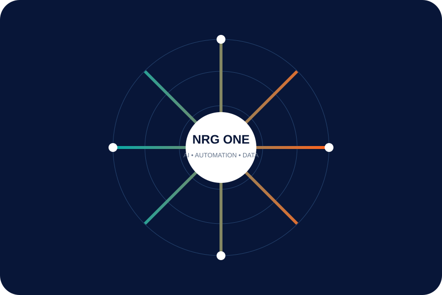

NRG ONE AI LAB
Practical AI.
Useful outcomes.
We focus on AI that removes friction from real workflows — not AI for decoration.


Where AI fits
Start small. Prove value. Scale what works.
Identify a repeatable task, connect the right data, design a safe workflow and measure whether the result is genuinely useful.
AI assistantsInternal knowledge and task support for teams.
Document intelligenceExtract, classify and route information from business documents.
Workflow automationConnect AI decisions with existing tools and approval flows.
Search & knowledgeMake approved business information easier to find and use.
AI delivery guardrails
Useful AI needs good engineering.
Data boundaries
Define what information the system can access and why.
Human review
Keep people in the loop where decisions need accountability.
Observability
Track quality, errors and usage so the system can improve.
Iteration
Improve prompts, workflows and product experience from real feedback.